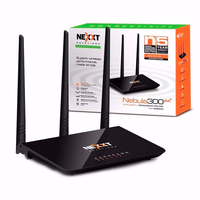
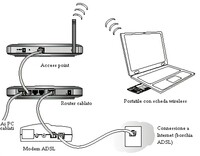
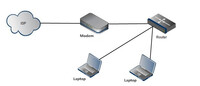

Inicio
Clientes
Nosotros
Configuración de una red inalambrica doméstica
Una red inalambrica domestica te permite acceder a internet desde muchos lugares de tu casa.
A continuacion te mostramos los pasos basicos para que puedas instalar una red inalambrica y empezar a usarla.
- Consigue un equipo adecuado

- Modem y conexion a internet por banda ancha
- Enrutador inalambrico
- Adapatador a red inalambrica
- Configurar el modem y la conexion a internet

- Si el proveedor de acceso a Internet (ISP) no ha configurado el módem, sigue las instrucciones proporcionadas con el módem para conectarlo a tu PC y a Internet.
- Si usas ADSL, conecta el módem a una toma de teléfono.
- Si usa un cable, conecte el módem a un conector de cable.
- Colocacion de router inalambrico

- Coloca el router inalámbrico en una ubicación central.
- Coloca el enrutador inalámbrico lejos del suelo y de las paredes, así como de objetos de metal.
- Reduce las interferencias.